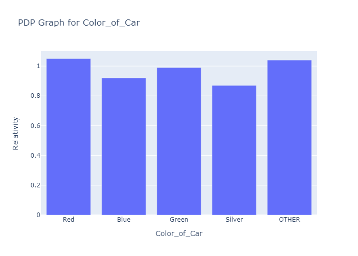
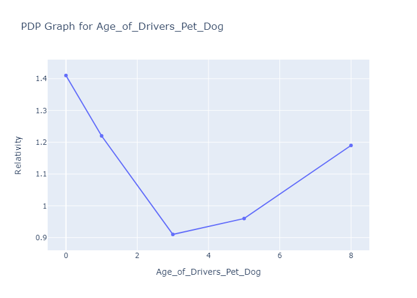

I make transparent models for regression and classification problems, mainly in the Insurance space. If you need something along those lines, contact me at explicability at protonmail dot com.
Explicable Modelling
Tailored Modelling
I wrote the open-source interpretable modelling library Durkon from scratch, using nothing more complicated than NumPy and Pandas. Because it’s my own work, I know exactly how to modify and extend it to fit your organisation’s unique needs.
"Hugh is the best I've ever worked with at certain invaluable things: he thinks from first principles and covers all of the many ways that ML training and deployment goes wrong. I've seen him implement unprecedented techniques by hand, all the while watching for the actual business effect behind the metrics." - Gavin Leech, AI Researcher, cofounder of Arb Research
Inherent Interpretability
All Durkon models can be represented as a collection of Partial Dependency Plots and/or Relativity Tables. This means the decisions they make will always be easy to explain to your clients / customers / regulators / underwriters / superiors / subordinates / self.
Eloquent Documentation
I am that most wondrous of things, an engineer who knows how to communicate. I wrote everything on this website; I’ll write the documentation for my work in a similar style and to a similar standard.
"Hugh's documentation is clear, concise, and geniunely pleasant to read." - James Blackham, CEO, By Miles
Optional Extras
| You provide: | You recieve: | |
|---|---|---|
| Free Demo: You may find it hard to believe that one rogue scientist can model better and faster than industry leaders. My response to such flattering suspicion is to echo famed epistemologist Benjamin “Macklemore” Haggerty: don’t believe me, just watch. If you want to know I can handle whatever problem your company is facing, select or generate an appropriate dataset and I’ll use it to demonstrate how well my tools work. |
|
|
| “Willis Towers Holmes” Guarantee: Every time I’ve seen a model made by Willis Towers Watson, or using their software, it’s turned out to have several things profoundly wrong with it. If you’re using a WTW model, I guarantee I can provide something that does the same job better. |
|
|
| Personnel Training: Most clients just want models and model-producing scripts. However, if you’re interested in developing in-house talent for using Durkon, I'd be very happy to talk through my approach in greater detail. |
|
|
| Model Adjustment: You may have a model you want to update for a new context, or to which you want to add a handful of new features, while leaving most of the structure intact. If so, this is a very strange thing to want and I don’t understand why you wouldn’t just refit the entire model. However, the performance of this bizarre ritual is something I’m quite capable of helping you with |
|
|
| Novel Constraints: Do you want some features to have monotonic effects on the predicted outcome? Are there columns which should never produce a >30% change to the final prediction? Is there some other limitation that you want your model optimized around? Let me know, and I’ll build something which ticks all your boxes without crossing any of your red lines. |
|
|
| Feature Selection: Data costs money, and using more of it complicates models while increasing regulatory burdens. My modelling approach allows me to use Grouped Lasso Penalization – combined with common sense – to make sure models only the features they need. |
|
|
| GBT Benchmarking: In addition to being a specialist in interpretable modelling, I also know how to use standard ML libraries. While benchmarking should ideally be handled in-house (otherwise, I’m marking my own work), if you want me to build an XGBoost model to compare my Durkon model to, that’s not a problem on my end. |
|
|
| Drift Correction: When context changes, models become systematically less accurate. Absent correction, high predictions will in general be too high, and low predictions will in general be too low.* If you expect a multi-year lag – or any other kind of change in context – between getting your data and deploying the model built on it, I can adjust for expected model decay. |
|
|
| Error Modelling: Model accuracy can be represented numerically. Things which can be represented numerically can be modelled. Therefore, it’s possible to model how accurate your model will be, predict which predictions are most credible, and provide that information alongside the predictions themselves. |
|
|
| Tobit Modelling for Censored Data: Sometimes**, part or all of your response column will not be of the form “[thing you want to predict]=x”, and will instead be of the form “[thing you want to predict] is greater/less than x”. I’ve spent quite some time figuring out exactly how to best work around this kind of censorship, and I’d be very interested in sharing my expertise. |
|
|
| Flexible Deployment: Durkon models are simple and intuitive enough that they can easily be converted into Emblem and other formats by hand, and low-dependency enough that they can be deployed in any backend with Python, NumPy and Pandas. However, if you want model output to automatically take a particular shape, I’m happy to oblige. |
|
|
| Custom Options: Want something that’s not in this table? Tell me, and I’ll look into it. And if it’s something that seems like it’d be a good addition to Durkon, I’ll build it for free and release it as open-source. |
|
|
*To see why this is true, consider the pathological case where changes in context are so extreme that your model is uncorrelated with reality: if you guess people’s heights randomly, the people you expect to be tall will be on average shorter than you expect, and the people you expect to be short will be on average taller than you expect.
**For example, when modelling market trends in sealed-bid first-place auctions if you only have the winning bids and are already part of the market.
Other Work
Model Fisking
Somehow, not everyone who goes to the trouble of making an explicable model finds time to explicate it. If you already have a transparent model – i.e., anything built using Excel or Emblem – I can look through it for you, and produce a list of suboptimalities / potential regulatory issues / just-plain-weirdness for you to address.
D+D.Sci
I make Data Science challenges and release them for free online. This is more of a hobby and advertising strategy than it is a service, but if you offered me large amounts of money to write a challenge tailored to your requirements I wouldn’t say no.
Conceptual Proofreading
I like editing things, and I’m pretty good at it. If you want me to look through a document for mistakes – grammatical, stylistic, factual, logical, strategic, or moral – I’d charge very reasonable rates. (. . . by Data Science standards, at least.)